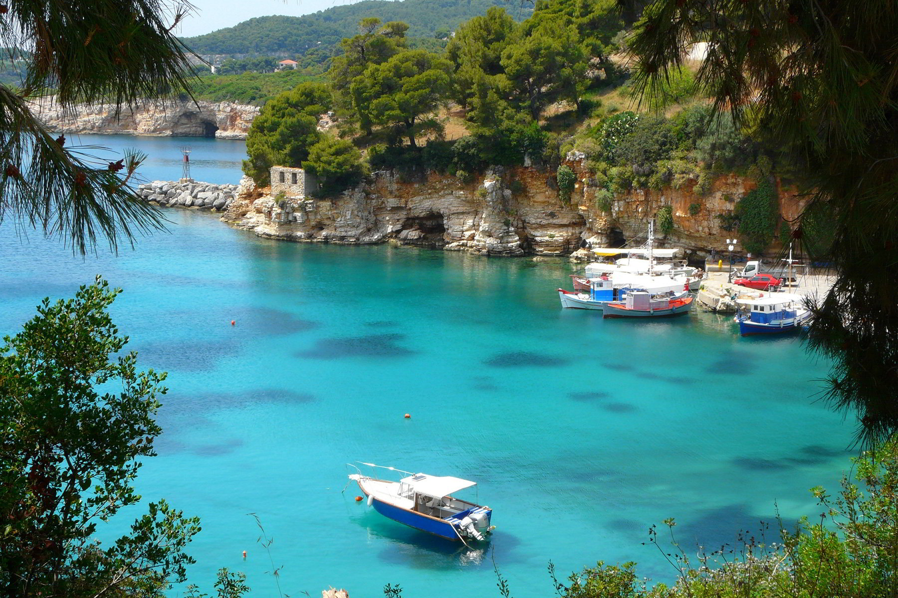

ΣΠΟΡΑΔΕΣ
Αρχική|
Σκιάθος |
Σκόπελος|
Αλόννησος |
Σκύρος|

Αλόννησος
Η Αλόννησος είναι γνωστή για την απαράμιλλη φυσική της ομορφιά. Έχει πευκόφυτες περιοχές στο
νότιο μέρος της με περιπατητικά μονοπάτια και πανέμορφα τοπία, αλλά και παραλίες με κρυστάλλινα
νερά.
Λόγω της θέσης της, η Αλόννησος υπήρξε πέρασμα των θαλάσσιων δρόμων του Αιγαίου. Στην
διάρκεια της ιστορίας της παρουσιάζεται με διάφορα ονόματα όπως Ίκος, Ευώνυμος, Λιοδρόμια και
Χιλιοδρόμια. Δεν ταυτίζεται με την αρχαία Αλόννησο η οποία μάλλον ήταν το γειτονικό νησί Κυρά
Παναγιά. Υπήρξε εμπορικός σταθμός κατά την Μινωική περίοδο και άκμασε χάρη στην ανάπτυξη της
αμπελουργίας και το κρασί της για το οποίο φημίζεται και σήμερα. Στο Κοκκινόκαστρο θεωρείται ότι
βρίσκονται η αρχαία πόλη Ίκος και έχουν βρεθεί απομεινάρια της οχύρωσης και οικοδομημάτων.